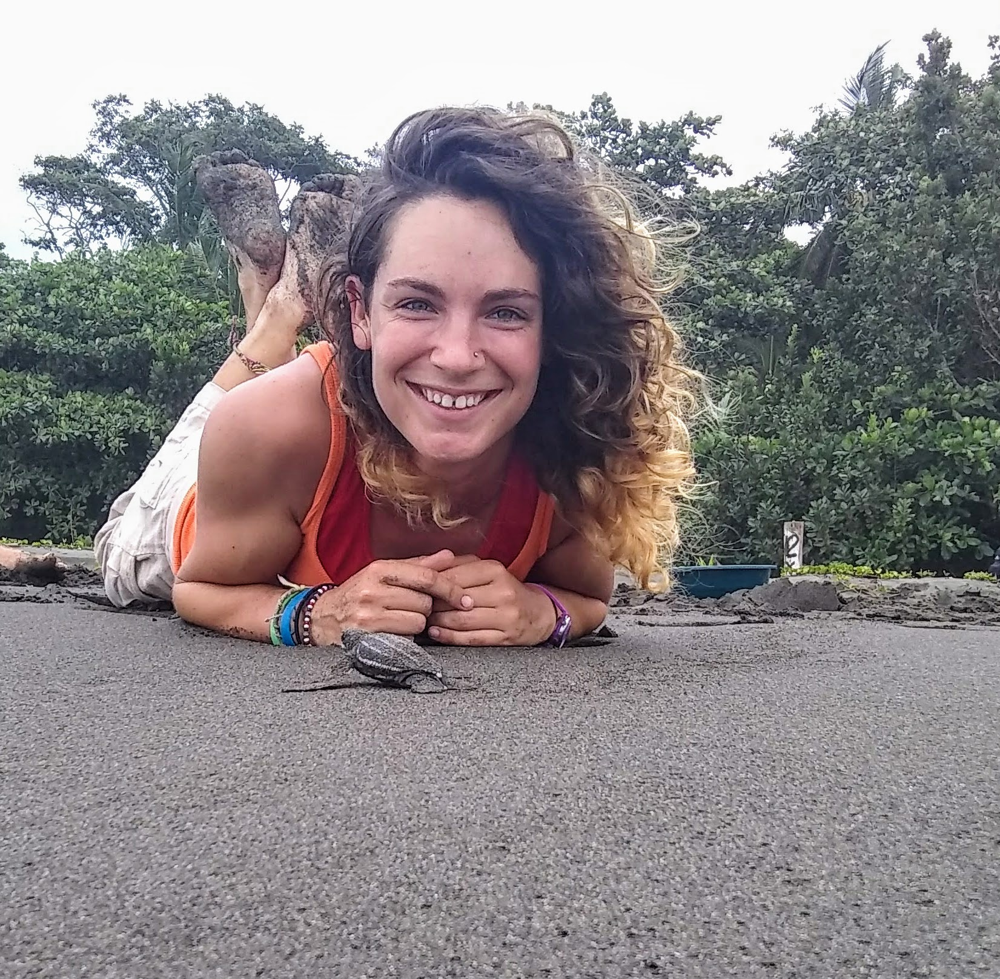

Jane DiCosimo is a fisheries consultant with 30+ years of experience at Federal, regional, state, and international fisheries agencies in the North Pacific, Mid-Atlantic, South Atlantic, and Gulf Coast. Jane is an expert in bridging science and policy to develop strategic management approaches for commercial, recreational, and subsistence fisheries, with proficiencies in stock assessments, observer programs, electronic data collections, and catch share programs. Recent projects include developing technical proposals for aquaculture, observer, and fishery data collection programs with large and small government contractors for NOAA Fisheries, founding and facilitating the 500 Women Scientists Silver Spring Pod, and mentoring young STEMM scientists. She has a M.A in Fisheries Science from the Virginia Institute of Marine Science and a B.A. in Zoology from Rutgers University.
Emily is a Fisheries Research Biologist in the Eastern Bering Sea Survey Group in the Groundfish Assessment Group at the Alaska Fisheries Science Center (AFSC). Before AFSC, Em worked in Silver Spring, MD where she was a contractor for the Office of Science and Technology (OST) in the Economics and Social Analysis Division providing statistical and data visualization expertise for the national annual Fisheries Economics of the US report. Before that, Em was a John A. Knauss Marine Policy Fellow working in OST’s Assessment and Monitoring Division’s Protected Species Science Branch working on sea turtle issues and marine mammal acoustics. While at headquarters, she also collaborated with researchers, and organized national workshops, and was involved in teaching and promoting the use of R programming at headquarters. Em obtained her BS and MS degrees in quantitative fisheries ecology from Stony Brook University. Her thesis research focused on the development of species distribution models that combined fisheries-independent bottom trawl survey data with oceanographic models to predict suitable habitat and distributional shifts. Em started working at AFSC during the COVID pandemic so she is working remotely from New York. She enjoys hiking and camping, getting out on the water either by boat or SCUBA, and listening to audiobooks!
Melissa Yencho is a Fish Biologist working on commercial fishery statistics in the NOAA Fisheries Office of Science and Technology. Melissa is a co-editor of the Fisheries of the United States annual report, a statistical yearbook presenting a snapshot of the commercial and recreational fishing industries. Melissa earned her M.S. in Marine and Atmospheric Sciences from Stony Brook University studying age, length, growth, mortality, and abundance of young-of-the-year winter flounder (Pseudopleuronectes americanus) in two contrasting environments in Long Island, NY. She attended Coastal Carolina University for undergraduate and earned dual B.S. degrees in Marine Science and Biology with a minor in Chemistry. While at Coastal, Melissa conducted research on eutrophication in coastal swashes along the Grand Strand, Myrtle Beach, S.C., songbird microsatellite DNA, and osmoregulation in sharks inhabiting Winyah Bay, SC. In her spare time, Melissa enjoys reading, painting and drawing, and is trying really hard to learn the fiddle.

Nicole “Nicki” Barbour is a graduate student at the University of Maryland Center for Environmental Science (UMCES), where she studies the movement ecology of sea turtles through different life stages as part of her dissertation. Nicki originally hails from California, where she earned a B.S. in Biology and did an honors capstone on the spatial and temporal distribution of benthic marine invertebrates as an undergraduate at California State University Monterey Bay, along with research on bottlenose dolphins, baleen whales, turkey vultures, and invasive species. Along with her dissertation research, Nicki also has a passion for science outreach and interdisciplinary collaborations and her recent external projects include UMCES PlasticWatch and Wave of Plastic, offshore aquaculture placement and socio-environmental impacts in the Gulf of Mexico, and ecolabeling for shellfish aquaculture. When she isn’t losing her eyesight reading papers or performing data analyses in R, Nicki loves to run, cuddle her giant dog, read, paint, play board games, and bake kale chips.